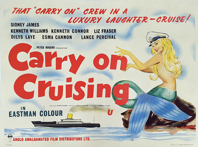
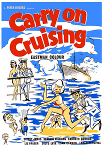

Ralph Thomas (uncredited)
Peter Rogers
Bruce Montgomery
Douglas Gamley
Alan Casley
Captain Crowther (Sid James) has five of his crew replaced at short notice before a new cruise voyage begins. Not only does he get the five most incompetent crew men ever to sail the seven seas, but the passengers turn out to be a rather strange bunch too.
The SS Happy Wanderer is the cruise ship and after this voyage, Crowther hopes to get a job as captain on a transatlantic ship, promising the crew members their jobs will be safe under the new captain. Starting off from England, the Happy Wanderer calls at unnamed ports in Spain, Italy and North Africa before going home again.
Single ladies Gladys (Liz Fraser) and Flo (Dilys Laye) take the cruise, with Flo hoping to find a husband. Bridget (Esma Cannon) is her usual dotty and entertaining self, and one unnamed passenger (Ronnie Stevens) never disembarks but always goes straight to the bar to drink, to forget an unidentified woman. The crew and passengers settle in as the ship leaves port and head chef Wilfred Haines (Lance Percival) finds out he is seasick. Mario Fabrizi makes a quick appearance as one of the cooks under Haines. Ed Devereaux, best known for the part of Matt Hammond in the Australian TV series Skippy, appears as a Young Officer.
Gladys and Flo fall for the PT instructor Mr Jenkins but nothing comes of it, especially when Flo turns out to be hopeless in the gym. Meanwhile, the new men try to impress Crowther but disaster follows disaster with him getting knocked out and covered in food at a party.
Meanwhile, ship's doctor Dr. Binn (Kenneth Connor) has fallen for Flo, but she wants nothing to do with him so he serenades her with a song after leaving Italy (Bella Marie, sung by Roberto Carinali), which she does not hear as she is asleep. Gladys, who has heard the song, realises that Flo is in love with Binn and with the help of First Officer Marjoribanks (Kenneth Williams) arranges a plot for Binn and Flo to get together. It works and the confident Binn finally confesses his feelings to a gobsmacked Flo, who returns his affections.
Crowther lets the five newcomers know that they have improved since the cruise began, simply by doing their jobs and not by trying to impress him. They learn that the Captain has been in charge of the Happy Wanderer for ten years and decide to hold a surprise party for him, with the passengers. Haines bakes him a many-flavoured cake and the barman cables the former barman for the recipe of the Captain's favourite drink, the 'Aberdeen Angus'.
The party goes well and Crowther gets his telegram telling him he has the captaincy of the new ship. He turns it down as he recognises it does not have the personal touch of a cruise ship, and prefers the company of his own crew.
Filming dates: 8 January-16 February 1962.
Interiors: Pinewood Studios, Buckinghamshire, England.
The film was based on an original story by Eric Barker and was the first Carry On film to be made in colour.
P&O – Orient Lines were thanked in the credits.
Regulars Sid James, Kenneth Williams and Kenneth Connor appear in the movie whereas Joan Sims and Charles Hawtrey do not.
Sims took ill shortly before filming began and was replaced by Dilys Laye, making her Carry On debut, at four days' notice. Sims returned two years later in Carry On Cleo.
Hawtrey was dropped for demanding star billing, but returned for the next entry, making this the only entry during Hawtrey's 23-film run which he missed.
Liz Fraser notches up the second of her four appearances here.
Lance Percival makes his only appearance in the series in Carry On Cruising, playing the ship's chef, the role originally designated for Hawtrey.
Carry On Cruising was the 12th most popular movie at the British box office in 1962.
20/20 Movie Reviews - "In fact, the earlier movies in the series (up to the mid-60s), all had essentially the same plot: a team of dim-witted but enthusiastic novices would find themselves thrown in at the deep end of some profession (teaching, policing, armed forces, etc) and create chaos before somehow coming good in the end. With the arrival of Barbara Windsor and her pneumatic boobs, the series descended into an endless round of crude sexual innuendo which depended more on the public’s fondness for the team’s principal members than the quality of the jokes. Naturally, it was only a matter of time before the series paid the price, but back in 1962 the writers were still aiming for a broader range of comedy.
Some of it works, but much of it is a little tiresome, and it’s clear that the series was already beginning to rely heavily on the strength of its stars’ comic personalities. James and Williams were always value for money, and Connor at least manages to keep his twitchy mannerisms to a minimum. Percival, whose only Carry On film this would be, proves to be a major bonus in the role of the ship’s cook who becomes sea-sick whenever he loses sight of the sea (it’s difficult to see the wispy Hawtrey in the role), while dear old Esma Cannon steals every scene she’s in as a ‘mad pixie’ with a fondness for a little tipple."
The original poster design by Eric Pulford. The last of the films to be scripted by Norman Hudis, with a palpable feel of the initial formula running out of steam. The poster is a fascinating mystery, suggesting last-minute indecision. The complete absence of star portraits is unprecedented (and quite unique), as is the format used. This is in fact a bewilderingly late example of a veteran (pre-war) printing technique known as ‘hand-drawn litho’ in which a copy of the artist’s original design has been sketched directly onto the printing plates. This is probably the last major British film poster to utilise the technique, and we can only speculate as to why it was suddenly trotted out of retirement.

